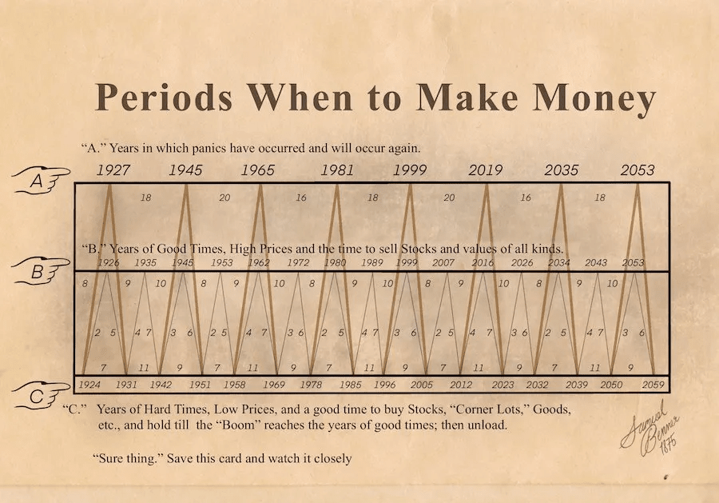

Imagine encontrar uma tabela econômica criada há mais de 150 anos que aponta períodos de pânico, preços elevados e possíveis oportunidades de compra. É essa curiosidade que mantém viva a discussão sobre a chamada Tabela de Samuel Benner.
Na versão que circula atualmente, aparecem anos como 1927, 1945, 1965, 1981, 1999 e 2019 na categoria de pânico. A tabela também indica 2026 como um período de bons tempos e preços elevados, 2032 como um período de preços baixos e 2035 como um possível ano de pânico.
Mas existe uma diferença importante entre uma data indicada por um modelo e uma previsão comprovada. Para entender essa tabela, precisamos conhecer sua história, saber como as categorias são organizadas e examinar criticamente as coincidências com eventos econômicos reais.
1. Quem foi Samuel Benner?
Samuel Benner foi um agricultor e comerciante americano do século XIX. Sua atividade estava ligada à produção e ao comércio de commodities, e ele acompanhava de perto as oscilações de preços que afetavam seus negócios.
O Pânico de 1873, uma importante crise financeira americana, marcou o contexto em que Benner passou a estudar os movimentos de preços e a procurar padrões que pudessem ajudar comerciantes a se preparar para futuras oscilações.
Em 1875, ele publicou a obra Benner's Prophecies of Future Ups and Downs in Prices. O trabalho procurava organizar observações históricas sobre as altas e baixas de preços, especialmente em mercados de commodities.
Benner acreditava que o estudo dos movimentos passados poderia ajudar a reconhecer padrões recorrentes. Sua proposta surgiu em uma época anterior aos atuais bancos centrais, às ferramentas modernas de análise estatística e aos mercados financeiros globalizados.
A obra pode ser pesquisada no catálogo da Biblioteca do Congresso dos Estados Unidos . Pesquise pelo título original do livro para consultar os registros bibliográficos disponíveis.
2. Por que ele criou a tabela?
No século XIX, alterações na produção agrícola, expansão industrial, demanda por matérias-primas, crédito e transporte podiam provocar grandes oscilações de preços. Para agricultores e comerciantes, entender essas variações era uma questão prática: comprar ou vender em um momento desfavorável poderia gerar prejuízos consideráveis.
Benner procurou identificar recorrências nos movimentos de preços e organizar suas observações em sequências de anos. A ideia era oferecer uma referência para pensar sobre possíveis altas, baixas e períodos de dificuldades econômicas.
A tentativa de estudar ciclos econômicos não é, por si só, absurda. A atividade econômica passa por expansões e contrações. A questão é saber se uma sequência fixa de anos consegue antecipar essas mudanças com consistência suficiente para orientar decisões reais.
3. A tabela que circula hoje é exatamente a original?
Não devemos confundir a obra original de Benner com todas as versões modernas que circulam na internet. O livro do século XIX apresentava suas próprias análises e projeções, enquanto a conhecida imagem Periods When to Make Money, estendida até 2059, é frequentemente associada a uma versão ampliada divulgada posteriormente por George Tritch.
Por isso, não é correto afirmar sem ressalvas que Benner publicou pessoalmente, em 1875, a tabela moderna completa com todas as datas até 2059. A imagem popular reúne a tradição associada ao trabalho de Benner e extensões posteriores.
Essa distinção importa: uma data adicionada posteriormente não deve ser tratada como uma previsão escrita pelo autor original. Também existem reproduções com diferenças de apresentação e interpretação.
4. Como funciona a Tabela de Samuel Benner?
A versão popular divide os anos em três categorias, identificadas pelas letras A, B e C. Cada uma representa um tipo de período econômico esperado.
A Anos de pânico
São os anos em que a tabela indica a possibilidade de pânicos ou crises econômicas. Na versão popular, a sequência utiliza intervalos de 18, 20 e 16 anos.
B Bons tempos e preços elevados
A tabela associa esses períodos a bons tempos e preços elevados, interpretados como momentos de possível venda de ativos. A sequência popular alterna intervalos de 9, 10 e 8 anos.
C Tempos difíceis e preços baixos
São os períodos associados a preços baixos e possíveis oportunidades de compra. A sequência reproduzida atualmente alterna intervalos de 11, 9 e 7 anos.

Observe as três linhas da imagem. A linha A reúne anos indicados como períodos de pânico; a linha B mostra os períodos associados a bons tempos e preços elevados; e a linha C representa tempos difíceis e preços baixos, segundo a interpretação da tabela.
As sequências são projetadas para a frente usando intervalos que se repetem. A tabela não analisa, por si só, os dados econômicos em tempo real, como inflação, juros, lucros empresariais ou condições de crédito.
5. Quais previsões históricas chamam a atenção?
Algumas datas da categoria A são frequentemente comparadas com acontecimentos importantes da história econômica. É necessário, porém, separar coincidências aproximadas de previsões exatas.
| Ano indicado | Contexto histórico | Cuidado na interpretação |
|---|---|---|
| 1927 | Houve uma recessão americana em 1926–1927; o grande crash da Bolsa ocorreu em 1929. | Não foi uma indicação exata do crash de 1929. |
| 1945 | Fim da Segunda Guerra Mundial e transição econômica no pós-guerra. | O contexto histórico não equivale a prever precisamente um pânico financeiro. |
| 1965 | Não há correspondência inequívoca com um grande pânico financeiro americano naquele ano. | É um exemplo que exige cautela ao tentar classificar acertos. |
| 1981 | Recessão americana de 1981–1982, em meio a juros elevados. | Há associação com uma recessão, mas isso não valida toda a sequência. |
| 1999 | Fase final da bolha de tecnologia; o pico ocorreu em datas diferentes conforme o índice analisado. | Coincidência aproximada, não previsão exata de todas as quedas. |
| 2019 | A pandemia provocou uma forte queda dos mercados em fevereiro e março de 2020. | O evento mais lembrado ocorreu no ano seguinte ao indicado. |
Essas comparações ajudam a entender por que a tabela desperta interesse. Algumas datas parecem se aproximar de acontecimentos relevantes; outras não apresentam correspondência clara ou dependem de uma margem de um ou mais anos.
Para avaliar um método de previsão com rigor, seria necessário definir antecipadamente o que conta como acerto, qual margem de erro é permitida e quais eventos serão analisados. Selecionar somente as coincidências mais impressionantes pode produzir uma impressão exagerada de precisão.
6. O que a tabela indica para 2026, 2032 e 2035?
2026 — Categoria B
Na versão popular, 2026 aparece como período de bons tempos e preços elevados. Isso não demonstra que todos os mercados estejam em um topo nem que seja o momento certo para vender investimentos.
2032 — Categoria C
A tabela marca 2032 como um período de preços baixos e tempos difíceis, interpretado como possível oportunidade de compra. Não existe garantia de que ações, imóveis ou commodities estarão baratos nesse ano.
2035 — Categoria A
A projeção popular indica 2035 como possível ano de pânico econômico. Ela não determina a causa, o país, o mercado afetado nem a intensidade de um eventual evento.
Uma data marcada na tabela não equivale a uma previsão confirmada. Uma projeção econômica útil precisaria especificar o que deve acontecer, em qual mercado, com qual magnitude e dentro de qual margem de tempo.
7. Por que algumas previsões parecem tão precisas?
A escolha dos acontecimentos
A história econômica contém muitos eventos marcantes. Quando se procura uma correspondência retrospectiva, é possível encontrar crises, recessões, picos e quedas próximos de algumas datas. Isso não significa que todas as datas tenham funcionado.
A margem de erro
Se uma crise ocorre um ou dois anos depois do período indicado, algumas interpretações a classificam como acerto aproximado. Essa flexibilidade pode aumentar artificialmente a quantidade aparente de acertos.
As versões da tabela
Diferentes versões e interpretações das sequências podem apresentar datas distintas. Por isso, é importante saber qual documento está sendo utilizado antes de comparar as previsões com os acontecimentos históricos.
A economia muda
A economia atual é diferente daquela do século XIX. Bancos centrais, mercados globais, tecnologia, políticas fiscais e cadeias internacionais de produção influenciam a maneira como crises surgem e se propagam.
8. Como um investidor pode usar essa informação?
A tabela pode servir como ponto de partida para estudar ciclos econômicos e refletir sobre o comportamento dos mercados. Ela não deve ser tratada como um calendário infalível de compra e venda.
- Organize sua reserva de emergência: ter recursos disponíveis ajuda a evitar a venda forçada de investimentos em momentos desfavoráveis.
- Diversifique: distribuir investimentos entre ativos e classes diferentes reduz a dependência de um único cenário.
- Observe os fundamentos: inflação, juros, endividamento, lucros e preços ajudam a contextualizar o mercado.
- Respeite seus objetivos: prazo, liquidez e tolerância a risco devem orientar a carteira.
- Evite decisões impulsivas: previsões chamativas não eliminam a incerteza nem garantem resultados.
Se você está organizando sua vida financeira, confira também nosso conteúdo sobre reserva de emergência e sobre investimentos para iniciantes em 2026 .
9. A Tabela de Samuel Benner realmente prevê o futuro?
Não há evidência suficiente para considerar a tabela um método confiável de previsão dos mercados. Algumas datas apresentam coincidências interessantes, mas outras não se encaixam claramente nos acontecimentos históricos.
Para demonstrar que um modelo prevê o mercado de maneira consistente, seria necessário testar todas as previsões com critérios definidos previamente, considerar os erros e compará-lo com estratégias alternativas.
Uma lista de coincidências, sozinha, não basta para comprovar capacidade de previsão. Isso não torna a história inútil: ela mostra como comerciantes e investidores há muito tempo tentam compreender os movimentos econômicos.
Conclusão: estude os ciclos, mas não aposte seu patrimônio em uma data
A Tabela de Samuel Benner continua despertando curiosidade porque oferece uma narrativa simples para um fenômeno complexo: a alternância entre períodos de otimismo, preços elevados, dificuldades e crises.
Seu contexto histórico é relevante, e algumas datas parecem se aproximar de acontecimentos marcantes. Entretanto, outras não apresentam correspondência clara. A ampliação posterior da tabela também exige cuidado na atribuição das previsões ao autor original.
A lição mais importante não é tentar adivinhar a próxima crise. É reconhecer que os mercados passam por períodos de otimismo e pessimismo, preparar-se para diferentes cenários e construir uma estratégia que não dependa de acertar o momento exato de comprar ou vender.
Conhecimento, disciplina, diversificação e planejamento são bases mais úteis para investir do que confiar cegamente em um calendário de previsões.
Perguntas frequentes sobre a Tabela de Samuel Benner
Quem foi Samuel Benner?
Foi um agricultor e comerciante americano que publicou, no século XIX, um estudo sobre oscilações de preços e possíveis ciclos econômicos.
Benner previu pessoalmente crises até 2059?
A tabela popular estendida até 2059 é associada a versões posteriores. Ela não deve ser confundida integralmente com o trabalho original de Benner.
O que significa a letra A?
Na versão popular, A representa anos indicados como períodos de pânico econômico.
O que a tabela indica para 2026?
A versão popular classifica 2026 como ano B, associado a bons tempos e preços elevados. Isso não garante que os mercados estejam em um topo nem que seja o momento correto para vender investimentos.
A tabela prevê uma crise em 2035?
A projeção popular classifica 2035 como ano A, mas isso não comprova que uma crise acontecerá.
É seguro investir seguindo o Ciclo de Benner?
Não é prudente basear decisões exclusivamente nessa tabela. Considere objetivos, prazo, liquidez, diversificação e riscos.
Fontes e leituras complementares
- Biblioteca do Congresso dos Estados Unidos — para pesquisar o registro bibliográfico da obra de Samuel Benner.
- Index Fund Advisors — Benner's Prophecies — material complementar sobre a obra e o ciclo.
- Malumatfuruş — análise sobre Samuel Benner — discussão sobre a tabela e suas atribuições.
As fontes possuem propósitos e níveis de evidência diferentes. A comparação histórica deve distinguir documentos originais, interpretações posteriores e coincidências observadas retrospectivamente.
Continue aprendendo com a Investimentos Visionários
Educação financeira é construída com estudo, planejamento e decisões conscientes.
Explorar mais matérias